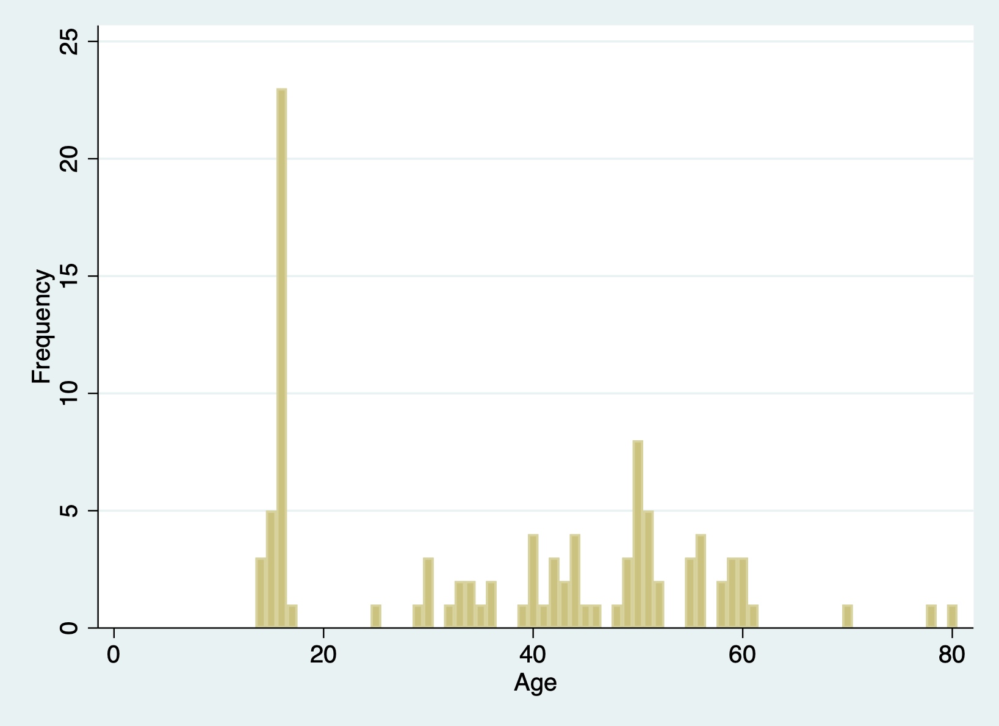

Abstract
This study investigates the extent to which loss aversion varies across age and gender in China. Employing an online, survey-based method, this study uses econometric approaches (regression models and the utility function in stata) and examines Chinese people of all ages and genders to assess loss aversion through mixed lottery questions. The findings are inconsistent with the hypothesis, revealing that gender and age aren’t significantly related to loss aversion. There seemed to be no significant differences between women and men, although men are a bit more loss-averse than women. Older people are found to be more loss- averse than younger people. These results contribute to the understanding of loss aversion in a cultural context and provide new insights into gender differences. Questions and research topics are proposed for further understanding and further research.
Keywords ： Loss aversion, risk, gender, age, China, behavioral economics
1. Introduction and Literature review
Loss aversion, a phenomenon when a loss is viewed as more emotionally severe compared to an equivalent game, is suggested by Amos Tversky and Daniel Kahneman. Proposed in 1979, this topic has become increasingly popular in research, producing dozens of studies in areas such as finance, psychology, politics, and marketing. Loss aversion is key in every aspect of our daily lives, since the extent of it, rather than its general occurrence, makes it a crucial factor in decision-making (Schmidt, 2002). By understanding the mechanisms of loss aversion, insights on human behavior can be recognised and strategies for mitigating its impact can be developed. This study aims to dive back into the nature of loss aversion, investigating how age and gender factors interact with it, shaping each individual’s responses in acting towards losses in the context of China. By looking into the findings, the study can provide a more nuanced understanding of decision-making and new insights. The relationship between loss aversion and age and gender is a popular research area, not to mention the numerous other research studies on abundant factors impacting loss aversion. The mechanisms of loss aversion have already been widely explored. But turning back to the basics of loss aversion, Gächter points out the effect of socio-demographic variables on loss aversion, stating that it increases with age, income, and wealth and decreases with education (2021). However, inconsistencies have arisen, debating the significance the variables have on loss aversion, especially gender. Gächter (2021) claims that gender differences aren’t significant in loss aversion while other studies report that female participants have shown a higher degree of loss aversion than male participants (Schmidt, 2002; Arora and Kumari, 2015). Such arguments have led to the confusion of whether loss aversion was really affected
by gender- if so, to what extent? Heated debates on the gender differences in risk preferences and loss aversion have led to several hypotheses and explanations and numerous research results. This study hopes to provide a point and use the results to verify one’s own theory. On the other hand, the variable age has been mostly consistent among various studies, asserting that older people show a higher frequency of loss aversion than young adults (Arora and Kumari, 2015; Gächter, 2021; Albert and Duffy, 2012), and so has education and income (Gächter, 2021; Blake, Cannon and Wright, 2021), although there has been a lack of explanation of why was age correlated with loss aversion. How these socio-demographic factors influence loss aversion have been conducted numerous times in different countries, in areas such as the US, India, and Germany respectively (Albert and Duffy, 2012; Arora and Kumari, 2015; Gächter, 2021; Schmidt, 2002). Nevertheless, a paucity of research appeared in the area of China, leading to uncharted questions: are the factors consistent between each country? Do different cultures shape individuals’ choices differently? Wang et al. show that different cultures do shape individuals’ choices, changing the way they perceive risks (2016). The divergence of Chinese culture from others might impact their decision-making, making this study wonder how and why it does so.
2. Methodology
2.1 Hypothesis
According to the studies done before, the study came up with two hypotheses. Supposing the results of most countries are consistent, the findings should be similar to those of the other studies. This study believed that: first, age is positively correlated with loss aversion, meaning that the older people get, the more loss averse they are. Second, gender is significantly correlated with loss aversion, and female participants show a larger extent of loss aversion than male participants.
2.2 Experiment design
This study used a survey approach and sent questionnaires through social media platforms. Wenjuanxing, a popular and convenient website in China for making surveys and collecting results was used. The participants were selected from different provinces in China, though most were in Beijing. In a total of 100 participants, 56 males and 44 females volunteered to participate. They varied around age, with children concentrating mostly on high school students while adults were scattered between the ages of 20 and 80. They weren’t given any remunerations or refreshments after finishing the survey. The time they used was short, under 5 minutes, and they relied on their senses, not using any help from the internet or friends. The data was collected and saved on Wenjuanxing, enabling later access. The data were then downloaded onto Excel for further processing and were analyzed by Stata. The participants all took the same survey, first asking for mostly background questions, determining variables such as age, gender, education level, and income level. Then a set of loss aversion questions were given out (see Appendix 1). The participants had to choose between receiving no money or having half the probability of receiving money (100 RMB) and the other half losing money (starting with 90 and gradually decreasing to 10 RMB). To confirm the predictions and exclude errors, three more questions measuring loss aversion were set (Appendix 2).
No exact model was used to measure loss aversion. This study used the combination of a few different methods in the hope of attaining more accurate results. In the first part, loss aversion is determined by the participant switching point and the total score in deciding to participate in the game; in the second part, loss aversion is determined by the total score of the three questions. The greater the total scores were, the more loss averse they were in the second part (3 as lowest and 6 as highest) and the less they were in the first part (9 as lowest and 18 as full marks). These scores are then regressed with the variables using Stata, calculating their p-values. To ensure credibility, the loss aversion coefficient for the first part was also measured and regressed with stata. The calculation of this model was a simplified version of Kahneman and Tversky’s model for measuring loss aversion. It was calculated using the two utility functions for gains and losses respectively. Due to the lack of data in calculating the values for alpha and beta in the utility function, this was simplified into a linear model for more convenient measures.
3. Results
Table 1: Descriptive Statistics
| VARIABLES | (1) N | (2) Mean | (3) Sd. | (4) Min | (5) Max |
|---|---|---|---|---|---|
| Age | 100 | 37.43 | 17.51724 | 14 | 80 |
| Gender | 100 | 1.44 | .4988877 | 1 | 2 |
| Education | 100 | 4.27 | 1.126853 | 2 | 6 |
| Income | 100 | 4.12 | 1.26555 | 1 | 6 |
There were 100 effective responses. With the wide range of age (14 to 80, with the mean age around 37.4), it was split into three groups, children, adults and elders to help distinguish the differences. Children were below 18, adults ranged from 18 to 59, and elders were 60 and above. Age and gender were independent variables, and education level and income level were control variables (the two had a close mean value, 4.27 and 4.12).

The average amount of money willing to lose during the first part of the game (the turning point) was 59.8 and the average of the score in the second part was 4.770. There were some inconsistencies between the first and second part, as the less loss averse participants weren’t mostly the ones who chose to participate in games in the beginning.
The dependent variables (Loss Aversion total score in part 1, the Turning point, Loss Aversion coefficient, Loss Aversion total score in part 2 respectively) in the table actually shows that loss aversion isn’t related significantly with gender and age. The other socio- demographic factors, such as education and income level also isn’t significantly related with loss aversion, the p-value being larger than 0.05.
Table 2: Loss Aversion Regression Model
| VARIABLES | (1) LA totalscore | (2) Turning point | (3) LA coefficient | (4) LA 123 total |
|---|---|---|---|---|
| Age | -0.013 | -0.119 | -0.009 | 0.003 |
| (-0.45) | (-0.41) | (-0.39) | (0.38) | |
| Gender | 0.076 | 1.007 | -0.087 | 0.053 |
| (0.11) | (0.14) | (-0.15) | (0.30) | |
| Education | 0.072 | 0.763 | 0.356 | -0.007 |
| (0.17) | (0.18) | (0.97) | (-0.06) | |
| Income | -0.132 | -1.386 | -0.449 | -0.040 |
| (-0.52) | (-0.54) | (0.21) | (-0.76) | |
| Constant | 15.117*** | 65.245* | 1.517 | 4.812*** |
| (6.53) | (2.78) | (0.75) | (8.06) | |
| Observations | 100 | 100 | 100 | 100 |
| R-squared | 0.0054 | 0.0054 | 0.0156 | 0.0112 |
t statistics in parenthesis
*** p<0.01 **p<0.05 *p<0.1
According to the calculation of the loss aversion coefficient, the elders were the most loss averse, showing the highest average loss aversion coefficient (3.904), then the adults (2.752), and lastly the children (2.524). However, the loss aversion coefficient of male participants (2.89 7 ) were higher than those of female participants (2.60 2 ), showing that males were actually more loss averse than females. No significant pattern of income level or education level was found in loss aversion habits.
Four participants were considered as the extreme of loss aversion, as they didn’t choose to participate in the first part of the survey at all and had a greater average score of loss aversion in the second part (5.250). 3 of 4 the participants considered as extreme were male, while other variables showed no obvious pattern. 33 participants were considered as slightly less loss averse, having a total score of 18 in the first part and a score of 4.576 in the second part, showing no significant pattern.
4. Discussion
Using multiple methods of analysis, it was concluded that the hypothesis was wrong: age and gender are not significantly correlated with loss aversion. However, the average value of the loss coefficient proved that older people were more loss-averse than younger people, and men were more loss-averse than men. Such findings were inconsistent with other studies. This study then aims to provide new insights, giving out reasons and suggesting why the results weren’t significantly correlated.
4.1 Gender and loss aversion.
The findings of this study are inconsistent Schmidt’s’ and the others. Gender has no significant correlation with loss aversion and by looking at extreme values and the comparison of loss aversion coefficient, women tend to be less loss averse than men. In most studies, though, women are explained to be more loss-averse than men because they exhibit less risk-taking actions than men. According to the evolutionary explanation suggested by Trivers and extended by Buss, women have a higher biological investment in producing offsprings due to gestation and birth, giving them a more cautious approach to giving birth, making them less risk-taking. On the contrary, men have a lower biological investment, highly increasing their reproduction success by having sex with multiple mates. This could derive from their risk-taking behavior since they’d gain more resources (2019). Today’s choices can still stem from biological roots, making women more loss-averse since the losses they have to consider wouldn’t be equal to their gains. The findings shown by Harris and Jekins match up with this theory (2023), and the results of a lot of other studies are consistent with the theory (Schmidt, 2002; Arora and Kumari, 2015).
The results of this study, though, refute this hypothesis. The perception that men are more risk-taking than women due to innate reasons could be wrong. Born as a general species, homo-sapiens, they might not have any risk preferences or loss preferences at the start. Biological needs for survival could be the foundation but not the main reason for loss aversion. It is further education, stereotypes that highly contrasts the difference between men and women, lead to a subconscious thought (women are more loss averse than men), therefore framing them and increasing the difference between genders. But nowadays, with the advocates of gender equality, the ideas that women can do anything men can, and education with no discrimination, the perceived difference between men and women might decrease, leading to no significant divergence or correlation in gender differences and loss aversion.
Such a hypothesis is similar to Solvic’s. Solvic comes up with a different explanation than the evolutionary theory for gender differences. He states that women engage more in risk-taking activities than men because they are more familiar with these risks than men. Women often face societal expectations and pressures, forming their risk attitude. Cultural contexts can also influence how different genders respond to risks (1987). In China, traditional thoughts such as gender roles highlight the significance of women as caregivers, and housewives, fostering a more risk-averse mindset since they are supposed to prioritize the well-being of others. Men are considered breadwinners, cultivating a more risk-taking attitude since ambition and assertion are required to make money. Psychological factors also suggest that gender differences tend to contribute to divergent outcomes. Women tend to put a greater emphasis on the potential negative outcomes compared with men, making them more loss-averse and less risk-taking. Solvic believes that it is the familiarity with risks that makes women engage in social risks more.
However, such findings in this study don’t match up with the explanations. This could be possible due to the prevalence of feminism, encouraging gender equality. Hu and Scott reported that people’s attitudes toward gender roles prescribing a traditional gender division of labor had significantly less support in China (2016). Traditional ideas of gender roles and patrilineal thoughts are continuously challenged, implying that women face less societal pressures and are encouraged to participate more fully in the workforce. This could increase women’s risk-taking attitude, perhaps leading to less loss-averse choices. With societal norms increasing equality, education, and job opportunities, and prevailing new ideas, perhaps men would feel challenged or turn to a new way of thinking, decreasing their willingness to take risks, and making them more loss-averse.
4.2 Age and loss aversion.
The findings in the results do, in a way, show that older people are more loss averse, because the loss aversion coefficient found in the results do confirm the hypotheses made. Although so, the regression results propose the contrary idea, showing a negative, and non- significant correlation with loss aversion. This could be due to the different emphasis each model has. Considering only on the aspect of comparing the loss aversion coefficient, Guttman and other researchers reports that age influences loss aversion, as it is correlated with the thickness of PCC (Posterior cingulate cortex), a brain region that controls decision making (2021). In their study, the thickness of PCC declines with age, affecting older people’s decision making and increasing their loss aversion (Guttman, Ghahremani, Pochon, Dean and London, 2021). Studies confirm their hypothesis, reporting an increase of loss aversion with the increase of age (Schmidt, 2002; Arora and Kumari, 2015). Part of the results of this study proves their explanation. Another implied answer could be the Socioemotional Selectivity Theory (SST), suggesting that people prioritize different goals based on their perception of time (Löckenhoff, 2011). Older people with a shorter perceived future might focus in the present, making the losses seem more impactful. They also focus on their emotions more, meaning that the emotional impact of losses could be a devastating blow for them than for younger people. But this explanation is a mere hypothesis, there still is a lack of the explanation of why there are age differences in loss aversion. Some studies might not be completely explainable for the results found in this study. Further research is required in this field.
4.3 Loss aversion and others
Even though age and gender and many other factors are said to affect loss aversion, people with different emotions, personalities, growing environments could make choices inconsistently. It is found that factors like the distribution of religion, individualism and masculinity can all have an indifference in loss aversion between gender effect on loss aversion (Wang, Rieger, Hens, 2016). Even after controlling variables, areas in Europe showed more loss aversion and areas like America showed less (Wang, et al. 2016). Studies in different geographic locations could lead to inconsistent findings. Chinese people value collectivism more, perhaps having a cushioning effect in the society after taking risks, decreasing their differences in loss aversion (Hsee and Weber, 1999). Americans might value individualism more, gaining a more unique personality, leading to significant differences in findings. Loss aversion also depends on psychological and emotional factors, and neural studies show that emotional regulations can alter assessments and choices decisions, impacting loss aversion (Sokol-Hessner, Camerer, Phelps, 2013). With numerous variables impacting loss aversion, it’s hard controlling variables such as masculinity, personality and such, perhaps leading to a small inconsistency with other studies in the final results.
5. Conclusion
This paper focuses mainly on influence of age and gender on loss aversion in China. The results show that there’s no significant relationships between age and loss aversion and gender and loss aversion.
5.1 Limitations
There are a few limitations in the study, one being the lack of participants. Compared to some studies, the number of participants was enough, but there wasn’t an even amount of distribution in age. Although the age range was wider than other studies (Arora and Kumari, 2015), the number of participants in some age ranges, elders for example, was lacking, which might lead to not-so-representative findings. This could also lead to, as mentioned before, a difference between the pattern and the correlation shown in the regression, since averaging the entire group may mask each response, and a lack of data could lead to some errors. The number of people in different provinces in China is also uneven, and since geographic factors could affect gender differences in loss aversion (Solvic, 1987), perhaps the results in mostly Beijing couldn’t represent the whole country.
The participants’ response is also something that could be improved. During the experiment, a few responses weren’t logically correct, as they presented an answer of agreeing to participate in higher levels of risk and giving up on lower levels of risk. Their answers were then deleted and new participants were asked to do the survey. Although errors like these were eliminated, it is hard to promise that every participant wasn’t rushing through it. This could be due to the absence of remunerations and refreshments for participants, since most studies had them.
The need for more adequate word choices during the design of questionnaires could be a problem. An inadequate design might imply demand characteristics, meaning that the title and word choices could subconsciously alter the decisions participants make. A phenomenon was discovered after the survey spread- a few participants claimed that they were ‘a gambler’ (in the survey). The participants could interpret such a survey as measuring risk attitudes, suggesting that they might have tried to incline to the gamble to fit the perceived purpose of the study.
5.2 Implications and Further Research
The results of this study still hold some questions unanswered. The analyses of the results gave some answers but also presented some gaps. Studies could focus on the relationship of age with risk aversion and loss aversion and the reason why they were related. Much could be implied about the cultural difference that influences loss aversion- the results were different in China than it was in India and the US, was it due to the cultural environment, history it had, the economy, or the political environment? How much is gender and age correlated with loss aversion? Is the significance of these factors larger than religious beliefs, emotions, and wealth? The relationships between risk-taking and loss aversion—how are they related? Does the factors that influence one subject influence another? Would the effect be any different? To make sure results were consistent and accurate, there could be an improvement in this study by increasing the accuracy and preciseness of survey questions, the number of participants, and other effective variables.
References
Albert, S., & Duffy. (2012). Differences in risk aversion between young and older adults. Neuroscience and Neuroeconomics, 3. doi:10.2147/nan.s
Arora, M. & Kumari S. (2015). Risk Taking in Financial Decisions as a Function of Age, Gender: Mediating Role of Loss Aversion and Regret. International Journal of Applied Psychology 2015, 5(4): 83- 89 doi 10.5923/j.ijap.20150504.
Blake, D., Cannon, E. & Wright, D. Quantifying loss aversion: Evidence from a UK population survey. J Risk Uncertain 63 , 27–57 (2021). https://doi.org/10.1007/s11166- 021 - 09356 - 7
Buss, D.M. (2019). Evolutionary Psychology: The New Science of the Mind (6th ed.). Routledge. https://doi.org/10.4324/
Demand characteristics. (2024, July 24). In Wikipedia. https://en.wikipedia.org/wiki/Demand_characteristics
Gächter, S., Johnson, E. J., & Herrmann, A. (2021). Individual-level loss aversion in riskless and risky choices. Theory and Decision. doi:10.1007/s11238- 021 - 09839 - 8
Guttman ZR, Ghahremani DG, Pochon J-B, Dean AC and London ED (2021) Age Influences Loss Aversion Through Effects on Posterior Cingulate Cortical Thickness. Front. Neurosci. 15:673106. doi: 10.3389/fnins.2021.
Harris, C. R., & Jenkins, M. (2006). Gender Differences in Risk Assessment: Why do Women Take Fewer Risks than Men? Judgment and Decision Making, 1(1) , 48–63. doi:10.1017/S
Hu, Y., & Scott, J. (2014). Family and Gender Values in China. Journal of Family Issues, 37(9), 1267–1293. doi:10.1177/0192513x
Löckenhoff C. E. (2011). Age, time, and decision making: from processing speed to global time horizons. Annals of the New York Academy of Sciences , 1235 , 44–56. https://doi.org/10.1111/j.1749-6632.2011.06209.x
Peter Sokol-Hessner, Colin F. Camerer, Elizabeth A. Phelps, Emotion regulation reduces loss aversion and decreases amygdala responses to losses, Social Cognitive and Affective Neuroscience , Volume 8, Issue 3 , March 2013, Pages 341–350, https://doi.org/10.1093/scan/nss
Schmidt, U., & Traub, S. (2002). An Experimental Test of Loss Aversion. Journal of Risk and Uncertainty, 25(3), 233 – 249. doi:10.1023/a:
Slovic, P. (1987). Risk perception research. Science , 236(4799), 280-285. https://doi.org/10.1126/science.236.4799.
Tversky, A. Kahneman, D. (1992). Advances in Prospect Theory: Cumulative Representation of Uncertainty Journal of Risk and Uncertainty, 5:297-323.
Wang, M., Rieger, M. O., & Hens, T. (2016). The Impact of Culture on Loss Aversion. Journal of Behavioral Decision Making, 30(2), 270–281. doi:10.1002/bdm.